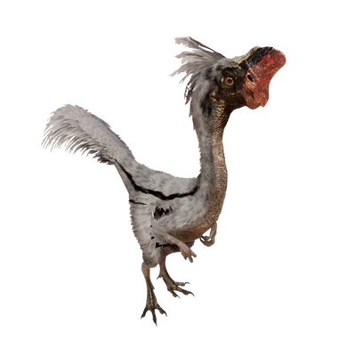

Useful Website
Oviraptor is an omnivorous dinosaur that lived during the late Cretaceous period. Although its name translates to ‘egg seizer’, this is based on a misapprehension that has long since been rectified. Early specimens were often found near nests, suggesting that Oviraptor was inclined to eat the eggs of other dinosaurs - but experts now believe they were brooding the eggs until they hatched.
